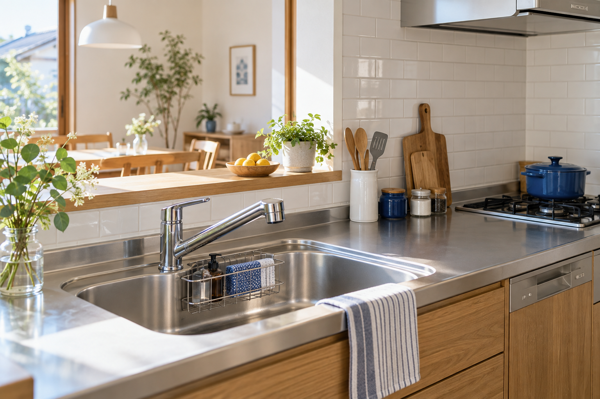

浴室クリーニング
15,400円／1室
浴槽・床・壁・天井・鏡・蛇口・ドア・排水口の手が届く範囲を清掃します。
浴室の清掃を相談する
SERVICE & PRICE
料金はすべて税込です。大きさや素材を伺い、作業前に内容と金額を確認します。
15,400円／1室
浴槽・床・壁・天井・鏡・蛇口・ドア・排水口の手が届く範囲を清掃します。
浴室の清掃を相談する14,300円／1か所
シンク・蛇口・作業台・コンロ表面と五徳・壁面・収納扉表面を清掃します。
キッチンの清掃を相談する13,200円／1台
フード・フィルター・取り外せるファンの油汚れを、素材に合わせて落とします。
レンジフードの清掃を相談する一度の訪問で、まとめてすっきり
単品と同じ清掃範囲。通常合計27,500円から1,100円お得です。
通常の出張費は料金内。有料駐車場の実費は事前にご案内します。規格外サイズ・特殊素材は事前相談。通常範囲の汚れによる当日加算はありません。
OUR PROMISE
気になる汚れや、触ってほしくない場所。小さなことも先にお聞かせください。大切なお住まいに合わせて、作業内容をご案内します。
追加作業が必要な場合は、先に内容と金額をご案内します。ご了承なく作業を追加することはありません。
設備の状態を確認し、周囲を養生して清掃します。傷や変色など、落とせないものも事前にお伝えします。
作業後は清掃箇所をご案内します。気になる点は、その場でお聞かせください。
フォームで清掃箇所、お住まいの区、ご希望日を選択。気になる汚れもご記入ください。
大きさ・素材・駐車場所を確認し、作業範囲と総額をご案内。ご了承後に日程を確定します。
開始と終了時の立ち会いをお願いします。水道・電気を使用し、作業後にお支払いいただきます。
SERVICE AREA
北区・上京区・左京区・中京区・東山区・山科区・下京区・南区・右京区・西京区・伏見区
山間部などは移動条件を事前に確認します。通常の出張費は料金内。有料駐車場が必要な場合は実費を事前提示します。
9:00〜18:00
水曜・日曜休み
フォームは24時間入力できます。
営業日を基準に1営業日以内の返信を目指します。
上記は架空店舗の営業設定です。本サイトから実際の受付・返信は行いません。
QUESTIONS
標準範囲の汚れによる当日加算はありません。有料駐車場の実費、規格外サイズなどは事前にご案内し、追加作業は同意を得てから行います。
浴槽エプロン内部・追い焚き配管・換気扇や乾燥機の内部、キッチン収納や家電の内部、ダクト内部などは対象外です。エアコン・洗濯機の分解清掃も扱っていません。
素材の変色・傷・劣化、深く入り込んだカビなどは残る場合があります。特殊コーティングのある鏡など、作業できない素材もあります。設備の状態を確認してご説明します。
清掃する場所の小物や食器などの移動をお願いします。水道・電気をお借りします。開始と終了時には立ち会いをお願いします。
開始前にご連絡いただいた場合、キャンセル料はかかりません。ご都合が変わったらお早めにお知らせください。
作業後の現金または振込を想定しています。このデモサイトで決済を行うことはありません。
掃除する場所がまだ決まっていなくても大丈夫。
気になることをお聞かせください。